Chapter 10: Biochemistry of the Genome¶
Introduction¶
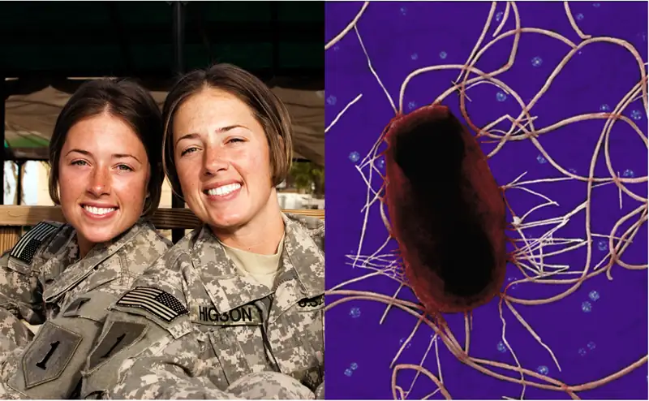
Children inherit some characteristics from each parent. Siblings typically look similar to each other, but not exactly the same—except in the case of identical twins. How can we explain these phenomena? The answers lie in heredity (the transmission of traits from one generation to the next) and genetics (the science of heredity). Because humans reproduce sexually, 50% of a child’s genes come from the egg cell and the remaining 50% from the sperm cell. Sperm and egg are formed through the process of meiosis, where DNA recombination occurs. Thus, there is no predictable pattern as to which 50% comes from which parent. Thus, siblings have only some genes, and their associated characteristics, in common. Identical twins are the exception, because they are genetically identical.
Genetic differences among related microbes also dictate many observed biochemical and virulence differences. For example, some strains of the bacterium Escherichia coli are harmless members of the normal microbiota in the human gastrointestinal tract. Other strains of the same species have genes that give them the ability to cause disease. In bacteria, such genes are not inherited via sexual reproduction, as in humans. Often, they are transferred via plasmids, small circular pieces of double-stranded DNA that can be exchanged between prokaryotes.
10.1 Using Microbiology to Discover the Secrets of Life¶
Learning Objectives
By the end of this section, you will be able to:
- Describe the discovery of nucleic acid and nucleotides
- Explain the historical experiments that led to the characterization of DNA
- Describe how microbiology and microorganisms have been used to discover the biochemistry of genes
- Explain how scientists established the link between DNA and heredity
Clinical Focus: Part 1
Alex is a 22-year-old college student who vacationed in Puerta Vallarta, Mexico, for spring break. Unfortunately, two days after flying home to Ohio, he began to experience abdominal cramping and extensive watery diarrhea. Because of his discomfort, he sought medical attention at a large Cincinnati hospital nearby.
- What types of infections or other conditions may be responsible?
Jump to the next Clinical Focus box.
Through the early 20th century, DNA was not yet recognized as the genetic material responsible for heredity, the passage of traits from one generation to the next. In fact, much of the research was dismissed until the mid-20th century. The scientific community believed, incorrectly, that the process of inheritance involved a blending of parental traits that produced an intermediate physical appearance in offspring; this hypothetical process appeared to be correct because of what we know now as continuous variation, which results from the action of many genes to determine a particular characteristic, like human height. Offspring appear to be a “blend” of their parents’ traits when we look at characteristics that exhibit continuous variation. The blending theory of inheritance asserted that the original parental traits were lost or absorbed by the blending in the offspring, but we now know that this is not the case.
Two separate lines of research, begun in the mid to late 1800s, ultimately led to the discovery and characterization of DNA and the foundations of genetics, the science of heredity. These lines of research began to converge in the 1920s, and research using microbial systems ultimately resulted in significant contributions to elucidating the molecular basis of genetics.
Discovery and Characterization of DNA¶
Modern understanding of DNA has evolved from the discovery of nucleic acid to the development of the double-helix model. In the 1860s, Friedrich Miescher (1844–1895), a physician by profession, was the first person to isolate phosphorus-rich chemicals from leukocytes (white blood cells) from the pus on used bandages from a local surgical clinic. He named these chemicals (which would eventually be known as RNA and DNA) “nuclein” because they were isolated from the nuclei of the cells. His student Richard Altmann (1852–1900) subsequently termed it “nucleic acid” 20 years later when he discovered the acidic nature of nuclein. In the last two decades of the 19th century, German biochemist Albrecht Kossel (1853–1927) isolated and characterized the five different nucleotide bases composing nucleic acid. These are adenine, guanine, cytosine, thymine (in DNA), and uracil (in RNA). Kossell received the Nobel Prize in Physiology or Medicine in 1910 for his work on nucleic acids and for his considerable work on proteins, including the discovery of histidine.
Foundations of Genetics¶
Despite the discovery of DNA in the late 1800s, scientists did not make the association with heredity for many more decades. To make this connection, scientists, including a number of microbiologists, performed many experiments on plants, animals, and bacteria.
Mendel’s Pea Plants¶
While Miescher was isolating and discovering DNA in the 1860s, Austrian monk and botanist Johann Gregor Mendel (1822–1884) was experimenting with garden peas, demonstrating and documenting basic patterns of inheritance, now known as Mendel’s laws.
In 1856, Mendel began his decade-long research into inheritance patterns. He used the diploid garden pea, Pisum sativum, as his primary model system because it naturally self-fertilizes and is highly inbred, producing “true-breeding” pea plant lines—plants that always produce offspring that look like the parent. By experimenting with true-breeding pea plants, Mendel avoided the appearance of unexpected traits in offspring that might occur if he used plants that were not true-breeding. Mendel performed hybridizations, which involve mating two true-breeding individuals (P generation) that have different traits, and examined the characteristics of their offspring (first filial generation, F1) as well as the offspring of self-fertilization of the F1 generation (second filial generation, F2) (Figure 10.2).
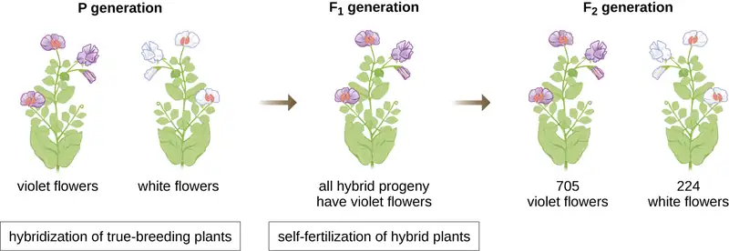
In 1865, Mendel presented the results of his experiments with nearly 30,000 pea plants to the local natural history society. He demonstrated that traits are transmitted faithfully from parents to offspring independently of other traits. In 1866, he published his work, “Experiments in Plant Hybridization,”1 in the Proceedings of the Natural History Society of Brünn. Mendel’s work went virtually unnoticed by the scientific community, which believed, incorrectly, in the theory of blending of traits in continuous variation.
He was not recognized for his extraordinary scientific contributions during his lifetime. In fact, it was not until 1900 that his work was rediscovered, reproduced, and revitalized by scientists on the brink of discovering the chromosomal basis of heredity.
The Chromosomal Theory of Inheritance¶
Mendel carried out his experiments long before chromosomes were visualized under a microscope. However, with the improvement of microscopic techniques during the late 1800s, cell biologists could stain and visualize subcellular structures with dyes and observe their actions during meiosis. They were able to observe chromosomes replicating, condensing from an amorphous nuclear mass into distinct X-shaped bodies and migrating to separate cellular poles. The speculation that chromosomes might be the key to understanding heredity led several scientists to examine Mendel’s publications and re-evaluate his model in terms of the behavior of chromosomes during mitosis and meiosis.
In 1902, Theodor Boveri (1862–1915) observed that in sea urchins, nuclear components (chromosomes) determined proper embryonic development. That same year, Walter Sutton (1877–1916) observed the separation of chromosomes into daughter cells during meiosis. Together, these observations led to the development of the Chromosomal Theory of Inheritance, which identified chromosomes as the genetic material responsible for Mendelian inheritance.
Despite compelling correlations between the behavior of chromosomes during meiosis and Mendel’s observations, the Chromosomal Theory of Inheritance was proposed long before there was any direct evidence that traits were carried on chromosomes. Thomas Hunt Morgan (1866–1945) and his colleagues spent several years carrying out crosses with the fruit fly, Drosophila melanogaster. They performed meticulous microscopic observations of fly chromosomes and correlated these observations with resulting fly characteristics. Their work provided the first experimental evidence to support the Chromosomal Theory of Inheritance in the early 1900s. In 1915, Morgan and his “Fly Room” colleagues published The Mechanism of Mendelian Heredity, which identified chromosomes as the cellular structures responsible for heredity. For his many significant contributions to genetics, Morgan received the Nobel Prize in Physiology or Medicine in 1933.
In the late 1920s, Barbara McClintock (1902–1992) developed chromosomal staining techniques to visualize and differentiate between the different chromosomes of maize (corn). In the 1940s and 1950s, she identified a breakage event on chromosome 9, which she named the dissociation locus (Ds). Ds could change position within the chromosome. She also identified an activator locus (Ac). Ds chromosome breakage could be activated by an Ac element (transposase enzyme). At first, McClintock’s finding of these jumping genes, which we now call transposons, was not accepted by the scientific community. It wasn’t until the 1960s and later that transposons were discovered in bacteriophages, bacteria, and Drosophila. Today, we know that transposons are mobile segments of DNA that can move within the genome of an organism. They can regulate gene expression, protein expression, and virulence (ability to cause disease).
Microbes and Viruses in Genetic Research¶
Microbiologists have also played a crucial part in our understanding of genetics. Experimental organisms such as Mendel’s garden peas, Morgan’s fruit flies, and McClintock’s corn had already been used successfully to pave the way for an understanding of genetics. However, microbes and viruses were (and still are) excellent model systems for the study of genetics because, unlike peas, fruit flies, and corn, they are propagated more easily in the laboratory, growing to high population densities in a small amount of space and in a short time. In addition, because of their structural simplicity, microbes and viruses are more readily manipulated genetically.
Fortunately, despite significant differences in size, structure, reproduction strategies, and other biological characteristics, there is biochemical unity among all organisms; they have in common the same underlying molecules responsible for heredity and the use of genetic material to give cells their varying characteristics. In the words of French scientist Jacques Monod, “What is true for E. coli is also true for the elephant,” meaning that the biochemistry of life has been maintained throughout evolution and is shared in all forms of life, from simple unicellular organisms to large, complex organisms. This biochemical continuity makes microbes excellent models to use for genetic studies.
In a clever set of experiments in the 1930s and 1940s, German scientist Joachim Hämmerling (1901–1980), using the single-celled alga Acetabularia as a microbial model, established that the genetic information in a eukaryotic cell is housed within the nucleus. Acetabularia spp. are unusually large algal cells that grow asymmetrically, forming a “foot” containing the nucleus, which is used for substrate attachment; a stalk; and an umbrella-like cap—structures that can all be easily seen with the naked eye. In an early set of experiments, Hämmerling removed either the cap or the foot of the cells and observed whether new caps or feet were regenerated (Figure 10.3). He found that when the foot of these cells was removed, new feet did not grow; however, when caps were removed from the cells, new caps were regenerated. This suggested that the hereditary information was located in the nucleus-containing foot of each cell.
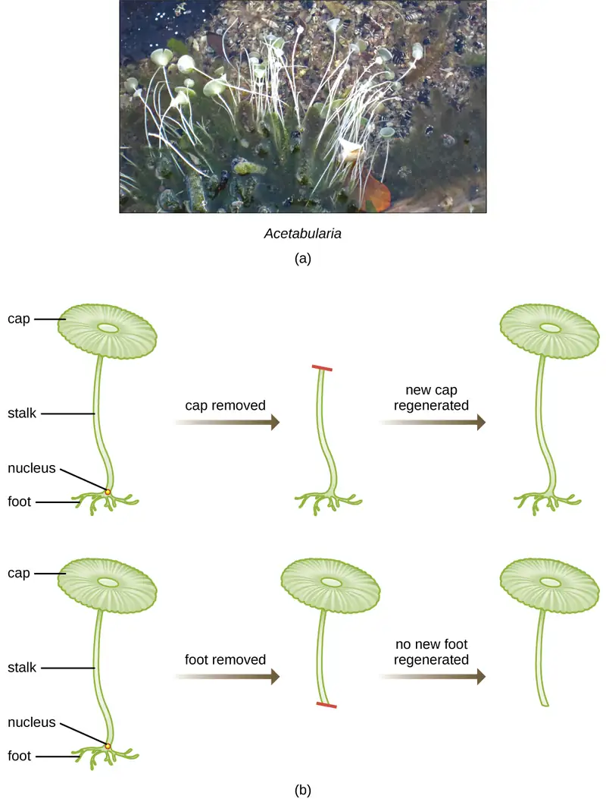
In another set of experiments, Hämmerling used two species of Acetabularia that have different cap morphologies, A. crenulata and A. mediterranea (Figure 10.4). He cut the caps from both types of cells and then grafted the stalk from an A. crenulata onto an A. mediterranea foot, and vice versa. Over time, he observed that the grafted cell with the A. crenulata foot and A. mediterranea stalk developed a cap with the A. crenulata morphology. Conversely, the grafted cell with the A. mediterranea foot and A. crenulata stalk developed a cap with the A. mediterranea morphology. He microscopically confirmed the presence of nuclei in the feet of these cells and attributed the development of these cap morphologies to the nucleus of each grafted cell. Thus, he showed experimentally that the nucleus was the location of genetic material that dictated a cell’s properties.
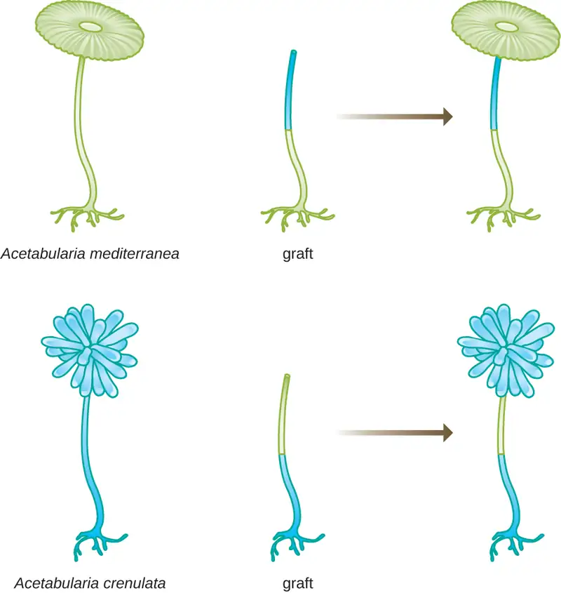
Another microbial model, the red bread mold Neurospora crassa, was used by George Beadle and Edward Tatum to demonstrate the relationship between genes and the proteins they encode. Beadle had worked with fruit flies in Morgan’s laboratory but found them too complex to perform certain types of experiments. N. crassa, on the other hand, is a simpler organism and has the ability to grow on a minimal medium because it contains enzymatic pathways that allow it to use the medium to produce its own vitamins and amino acids.
Beadle and Tatum irradiated the mold with X-rays to induce changes to a sequence of nucleic acids, called mutations. They mated the irradiated mold spores and attempted to grow them on both a complete medium and a minimal medium. They looked for mutants that grew on a complete medium, supplemented with vitamins and amino acids, but did not grow on the minimal medium lacking these supplements. Such molds theoretically contained mutations in the genes that encoded biosynthetic pathways. Upon finding such mutants, they systematically tested each to determine which vitamin or amino acid it was unable to produce (Figure 10.5) and published this work in 1941.2
![Diagram of Beadle and Tatum’s experiment. Wild type spores are exposed to X-rays to form mutagenized spores. The wild type and mutagenized spores are then crossed. The mutants are then grown on complete (with amino acids) and minimal media (without amino acids). Mutants that grow only on complete medium are identified. Spores that cannot grow on a minimal medium are tested on a minimal medium with a single amino acid added. Spores that grow inonly one of these tubes have a mutation in the pathway that produces that particular amino acid.](img/osc-microbio-10-01-x-raymold.webp)
Subsequent work by Beadle, Tatum, and colleagues showed that they could isolate different classes of mutants that required a particular supplement, like the amino acid arginine (Figure 10.6). With some knowledge of the arginine biosynthesis pathway, they identified three classes of arginine mutants by supplementing the minimal medium with intermediates (citrulline or ornithine) in the pathway. The three mutants differed in their abilities to grow in each of the media, which led the group of scientists to propose, in 1945, that each type of mutant had a defect in a different gene in the arginine biosynthesis pathway. This led to the so-called one gene–one enzyme hypothesis, which suggested that each gene encodes one enzyme.
Subsequent knowledge about the processes of transcription and translation led scientists to revise this to the “one gene–one polypeptide” hypothesis. Although there are some genes that do not encode polypeptides (but rather encode for transfer RNAs [tRNAs] or ribosomal RNAs [rRNAs], which we will discuss later), the one gene–one enzyme hypothesis is true in many cases, especially in microbes. Beadle and Tatum’s discovery of the link between genes and corresponding characteristics earned them the 1958 Nobel Prize in Physiology and Medicine and has since become the basis for modern molecular genetics.
![The table at the top is labeled Beadle and Tatum Experiments and shows the growth pattern of 4 different spores. The wild type spore grew on minimal medium (MM), MM + Ornithing, MM + Citruline and MM + Arginine. Mutant 1 did not grow on MM but did grow on MM + Ornithing, MM + Citruline and MM + Arginine. Mutant 2 did not grow on MM or MM + Ornithing but did grow on MM + Citruline and MM + Arginine. Mutant 3 did not grow on MM, MM + Ornithing, or MM + Citruline but did grow on MM + Arginine. Underneath the table is a diagram that explains these results. The top diagram shows a pathway where gene 1 produces enzyme 1 and enzyme 1 produces ornithine. Gene 2 produces enzyme 2 which converts ornithine to citruline. Gene 3 produces enzyme 3 which converts citruline to arginine. Mutant 1 had a mutation in gene 1 that destroyed the function of enzyme 1, so one of the amino acids are produced. Mutant 2 had a mutation in gene 2 that destroyed the function of enzyme 2. So, Ornithine is still produced but citruline and arginine are not. Mutant 3 had a mutation in gene 3 that destroyed the function of enzyme 3. So, ornithine and citruline are produced but arginine is not.](img/osc-microbio-10-01-geneenzyme.webp)
Link to Learning
To learn more about the experiments of Beadle and Tatum, visit this website from the DNA Learning Center.
Check Your Understanding
- What organism did Morgan and his colleagues use to develop the Chromosomal Theory of Inheritance? What traits did they track?
- What did Hämmerling prove with his experiments on Acetabularia?
DNA as the Molecule Responsible for Heredity¶
By the beginning of the 20th century, a great deal of work had already been done on characterizing DNA and establishing the foundations of genetics, including attributing heredity to chromosomes found within the nucleus. Despite all of this research, it was not until well into the 20th century that these lines of research converged and scientists began to consider that DNA could be the genetic material that offspring inherited from their parents. DNA, containing only four different nucleotides, was thought to be structurally too simple to encode such complex genetic information. Instead, protein was thought to have the complexity required to serve as cellular genetic information because it is composed of 20 different amino acids that could be combined in a huge variety of combinations. Microbiologists played a pivotal role in the research that determined that DNA is the molecule responsible for heredity.
Griffith’s Transformation Experiments¶
British bacteriologist Frederick Griffith (1879–1941) was perhaps the first person to show that hereditary information could be transferred from one cell to another “horizontally” (between members of the same generation), rather than “vertically” (from parent to offspring). In 1928, he reported the first demonstration of bacterial transformation, a process in which external DNA is taken up by a cell, thereby changing its characteristics.3 He was working with two strains of Streptococcus pneumoniae, a bacterium that causes pneumonia: a rough (R) strain and a smooth (S) strain. The R strain is nonpathogenic and lacks a capsule on its outer surface; as a result, colonies from the R strain appear rough when grown on plates. The S strain is pathogenic and has a capsule outside its cell wall, allowing it to escape phagocytosis by the host immune system. The capsules cause colonies from the S strain to appear smooth when grown on plates.
In a series of experiments, Griffith analyzed the effects of live R, live S, and heat-killed S strains of S. pneumoniae on live mice (Figure 10.7). When mice were injected with the live S strain, the mice died. When he injected the mice with the live R strain or the heat-killed S strain, the mice survived. But when he injected the mice with a mixture of live R strain and heat-killed S strain, the mice died. Upon isolating the live bacteria from the dead mouse, he only recovered the S strain of bacteria. When he then injected this isolated S strain into fresh mice, the mice died. Griffith concluded that something had passed from the heat-killed S strain into the live R strain and “transformed” it into the pathogenic S strain; he called this the “transforming principle.” These experiments are now famously known as Griffith’s transformation experiments.
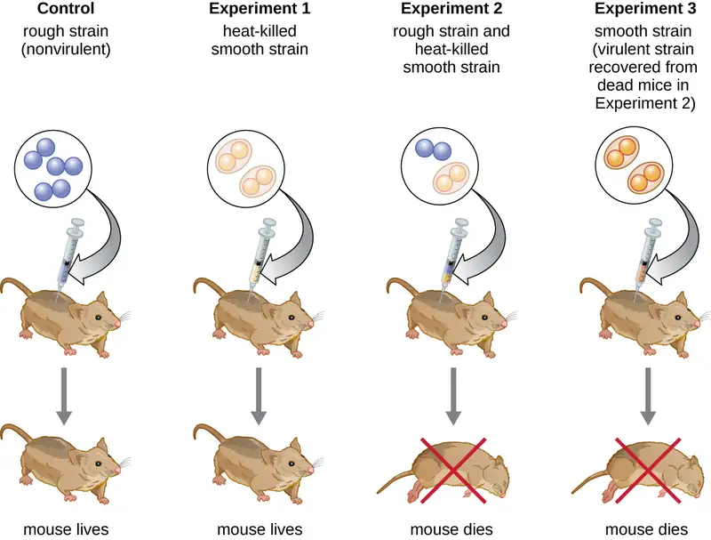
In 1944, Oswald Avery, Colin MacLeod, and Maclyn McCarty were interested in exploring Griffith’s transforming principle further. They isolated the S strain from infected dead mice, heat-killed it, and inactivated various components of the S extract, conducting a systematic elimination study (Figure 10.8). They used enzymes that specifically degraded proteins, RNA, and DNA and mixed the S extract with each of these individual enzymes. Then, they tested each extract/enzyme combination’s resulting ability to transform the R strain, as observed by the diffuse growth of the S strain in culture media and confirmed visually by growth on plates. They found that when DNA was degraded, the resulting mixture was no longer able to transform the R strain bacteria, whereas no other enzymatic treatment was able to prevent transformation. This led them to conclude that DNA was the transforming principle. Despite their results, many scientists did not accept their conclusion, instead believing that there were protein contaminants within their extracts.
![A diagram of Avery, MaLeod and McCarty’s experiment: Determining the identity of the hereditary material. Heat is used to kill S strain of S. pneumonia and capsule components are removed from solution. This produes a solution with DNA, RNA and proteins. This solution is then placed into 4 tubes. In the control, no enzymes are used so DNA, RNA, and proteins are all present. R cells are then added and S cells are found because transformation occurred. In the next experiment proteases degrade proteins in the sample, leaving DNA and RNA. R cells are added and S cells are found. Therefore, transformation occurred in the absence of proteins. In the next experiment ribonucleases degrade RNA in the sample, leaving DNA and proteins. R cells are added and S cells are found. Therefore, transformation occurred in the absence of RNA. In the final experiment deoxyribonucleases degrade DNA in the sample, leaving proteins and RNA. R cells are added and S cells are not found. Therefore, transformation does not occur without DNA. DNA is necessary for transformation.](img/osc-microbio-10-01-dnatrans.webp)
Check Your Understanding
- How did Avery, MacLeod, and McCarty’s experiments show that DNA was the transforming principle first described by Griffith?
Hershey and Chase’s Proof of DNA as Genetic Material¶
Alfred Hershey and Martha Chase performed their own experiments in 1952 and were able to provide confirmatory evidence that DNA, not protein, was the genetic material (Figure 10.9).4 Hershey and Chase were studying a bacteriophage, a virus that infects bacteria. Viruses typically have a simple structure: a protein coat, called the capsid, and a nucleic acid core that contains the genetic material, either DNA or RNA (see Viruses). The particular bacteriophage they were studying was the T2 bacteriophage, which infects E. coli cells. As we now know today, T2 attaches to the surface of the bacterial cell and then it injects its nucleic acids inside the cell. The phage DNA makes multiple copies of itself using the host machinery, and eventually the host cell bursts, releasing a large number of bacteriophages.
Hershey and Chase labeled the protein coat in one batch of phage using radioactive sulfur, 35S, because sulfur is found in the amino acids methionine and cysteine but not in nucleic acids. They labeled the DNA in another batch using radioactive phosphorus, 32P, because phosphorus is found in DNA and RNA but not typically in protein.
Each batch of phage was allowed to infect the cells separately. After infection, Hershey and Chase put each phage bacterial suspension in a blender, which detached the phage coats from the host cell, and spun down the resulting suspension in a centrifuge. The heavier bacterial cells settled down and formed a pellet, whereas the lighter phage particles stayed in the supernatant. In the tube with the protein labeled, the radioactivity remained only in the supernatant. In the tube with the DNA labeled, the radioactivity was detected only in the bacterial cells. Hershey and Chase concluded that it was the phage DNA that was injected into the cell that carried the information to produce more phage particles, thus proving that DNA, not proteins, was the source of the genetic material. As a result of their work, the scientific community more broadly accepted DNA as the molecule responsible for heredity.
![Diagram of Hershey Chase experiment. 1- One batch of phage was labeled with 32P which is incorporated into the DNA. Another batch is labeled with 35S which is incorporated into the protein coat. 2 – Bacteria were infected with the phage. The researchers were looking to identify if viral DNA or viral protein entered the host cell. 3 – Each culture is blended and centrifuged to separate the phage from the bacteria. The centrifuge separates the lighter phage particles from the heavier bacterial cells. 4 – Bacteria infected with phage 32P labeled DNA produce 32P labeled phage. Bacteria infected with 35S labeled phage produced unlabeled phage.](img/osc-microbio-10-01-hersheychase.webp)
By the time Hershey and Chase published their experiment in the early 1950s, microbiologists and other scientists had been researching heredity for over 80 years. Building on one another’s research during that time culminated in the general agreement that DNA was the genetic material responsible for heredity (Figure 10.10). This knowledge set the stage for the age of molecular biology to come and the significant advancements in biotechnology and systems biology that we are experiencing today.
Link to Learning
To learn more about the experiments involved in the history of genetics and the discovery of DNA as the genetic material of cells, visit this website from the DNA Learning Center.
Check Your Understanding
- How did Hershey and Chase use microbes to prove that DNA is genetic material?
![A timeline. 1865: Mendel documents patters of heredity in pea plants. 1869L Miescher first identifies DNA (“nuclein”). 1902: Sutton and Boveri propose chromosome theory of heredity. 1915: Morgan and his “Fly Room” colleagues confirm the chromosome theory of heredity. 1927: Muller shows that X-rays induce mutation. 1928: Griffith’s “transformation experiments” transform non-pathogenic bacterial strains to pathogenic. 1930’s: Mammerling shows that hereditary information is contained in the nuclei of eukaryotic cells. 1930: McClintock demonstrates genetic recombination in corn. 1941: Beadle and Tatum describe the “one gen-one enzyme” hypothesis. 1944: Avery, McLeod, and McCarty show that DNA is the “transforming principle” responsible for heredity. 1950: Chargaff discovers that A=T and C=G (Chargaff’s rules). 1952: Hershey and Chase use radioactive labeling to prove that DNA is responsible for heredity. 1953: Watson and Crick propose the double helix structure of DNA. 1961: Jacob and Monod propose the existence of mRNA. 1990’s: Genome sequence projects begin.](img/osc-microbio-10-01-timeline.webp)
10.2 Structure and Function of DNA¶
Learning Objectives
By the end of this section, you will be able to:
- Describe the biochemical structure of deoxyribonucleotides
- Identify the base pairs used in the synthesis of deoxyribonucleotides
- Explain why the double helix of DNA is described as antiparallel
In Microbial Metabolism, we discussed the microbial catabolism of three classes of macromolecules: proteins, lipids and carbohydrates. In this chapter, we will discuss the genetic role of a fourth class of molecules: nucleic acids. Like other macromolecules, nucleic acids are composed of monomers, called nucleotides, which are polymerized to form large strands. Each nucleic acid strand contains certain nucleotides that appear in a certain order within the strand, called its base sequence. The base sequence of deoxyribonucleic acid (DNA) is responsible for carrying and retaining the hereditary information in a cell. In Mechanisms of Microbial Genetics, we will discuss in detail the ways in which DNA uses its own base sequence to direct its own synthesis, as well as the synthesis of RNA and proteins, which, in turn, gives rise to products with diverse structure and function. In this section, we will discuss the basic structure and function of DNA.
DNA Nucleotides¶
The building blocks of nucleic acids are nucleotides. Nucleotides that compose DNA are called deoxyribonucleotides. The three components of a deoxyribonucleotide are a five-carbon sugar called deoxyribose, a phosphate group, and a nitrogenous base, a nitrogen-containing ring structure that is responsible for complementary base pairing between nucleic acid strands (Figure 10.11). The carbon atoms of the five-carbon deoxyribose are numbered 1ʹ, 2ʹ, 3ʹ, 4ʹ, and 5ʹ (1ʹ is read as “one prime”). A nucleoside comprises the five-carbon sugar and nitrogenous base.
![a) At the center of a deoxyribonucleotide is a deoxyribose sugar. This is a pentagon shape with O at the top and H attached to the bottom right Carbon and OH attached to the bottom right Carbon. Attached to the upper left carbon is a phosphate group which consists of a Phosphate attached to 4 oxygens. Attached to the upper right carbon of the sugar is a base which consists of 1 or 2 rings that contain both carbon and nitrogen. B) A more detailed drawing of deoxyribose. This is a pentagon shaped structure with oxygen at the top corner. Moving clockwise, the upper right corner has a carbon labeled 1-prime. There is an OH attached to this carbon. The bottom right carbon is labeled 2-prime and has an H attached to it. The bottom left carbon is labeled 3-prime and has an OH group attached to it. The upper left carbon is labeled 4-prime and has CH2OH attached. This last carbon is labeled 5-prime.](img/osc-microbio-10-02-nucleotide.webp)
The deoxyribonucleotide is named according to the nitrogenous bases (Figure 10.12). The nitrogenous bases adenine (A) and guanine (G) are the purines; they have a double-ring structure with a six-carbon ring fused to a five-carbon ring. The pyrimidines, cytosine (C) and thymine (T), are smaller nitrogenous bases that have only a six-carbon ring structure.
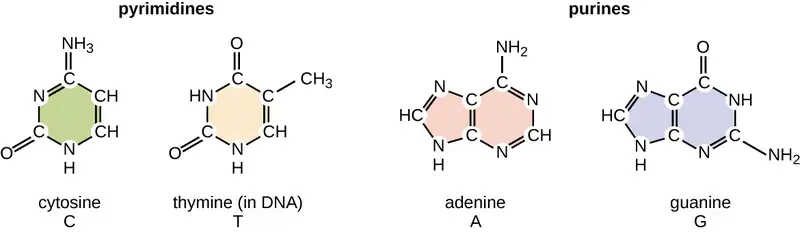
Individual nucleoside triphosphates combine with each other by covalent bonds known as 5ʹ-3ʹ phosphodiester bonds, or linkages whereby the phosphate group attached to the 5ʹ carbon of the sugar of one nucleotide bonds to the hydroxyl group of the 3ʹ carbon of the sugar of the next nucleotide. Phosphodiester bonding between nucleotides forms the sugar-phosphate backbone, the alternating sugar-phosphate structure composing the framework of a nucleic acid strand (Figure 10.13). During the polymerization process, deoxynucleotide triphosphates (dNTP) are used. To construct the sugar-phosphate backbone, the two terminal phosphates are released from the dNTP as a pyrophosphate. The resulting strand of nucleic acid has a free phosphate group at the 5ʹ carbon end and a free hydroxyl group at the 3ʹ carbon end. The two unused phosphate groups from the nucleotide triphosphate are released as pyrophosphate during phosphodiester bond formation. Pyrophosphate is subsequently hydrolyzed, releasing the energy used to drive nucleotide polymerization.
![A nucleotide with a sugar in the center, the sugar is a pentagon with oxygen at the top point. Moving clockwise the carbons are numbered 1 (upper right) 2, (bottom right), 3 (bottom left), 4 (upper left) and 5 (projecting from carbon 4. Attached to carbon 1 is a base (thymine). Attached to carbon 5 is a phosphate group. Another nucleotide below has the same structure (other than that the base is C rather than T). The phosphate group attached to carbon 5 of the lower nucleotide is also attached to carbon 3 of the upper nucleotide. The lower nucleotide has an OH attached to its carbon 3. Another nucleotide has the OH group of its phosphate highlighted. A phospodiester bond forms when water is removed from these two OH groups. This results in a bond forming between carbon 3 of the nucleotide in the chain and the phosphate group attached to carbon 5 of the new nucleotide. This is called a phosphodiester bond.](img/osc-microbio-10-02-nacidstrand.webp)
Check Your Understanding
- What is meant by the 5ʹ and 3ʹ ends of a nucleic acid strand?
Discovering the Double Helix¶
By the early 1950s, considerable evidence had accumulated indicating that DNA was the genetic material of cells, and now the race was on to discover its three-dimensional structure. Around this time, Austrian biochemist Erwin Chargaff5 (1905–2002) examined the content of DNA in different species and discovered that adenine, thymine, guanine, and cytosine were not found in equal quantities, and that it varied from species to species, but not between individuals of the same species. He found that the amount of adenine was very close to equaling the amount of thymine, and the amount of cytosine was very close to equaling the amount of guanine, or A = T and G = C. These relationships are also known as Chargaff’s rules.
Other scientists were also actively exploring this field during the mid-20th century. In 1952, American scientist Linus Pauling (1901–1994) was the world’s leading structural chemist and odds-on favorite to solve the structure of DNA. Pauling had earlier discovered the structure of protein α helices, using X-ray diffraction, and, based upon X-ray diffraction images of DNA made in his laboratory, he proposed a triple-stranded model of DNA.6 At the same time, British researchers Rosalind Franklin (1920–1958) and her graduate student R.G. Gosling were also using X-ray diffraction to understand the structure of DNA (Figure 10.14). It was Franklin’s scientific expertise that resulted in the production of more well-defined X-ray diffraction images of DNA that would clearly show the overall double-helix structure of DNA.
James Watson (1928–), an American scientist, and Francis Crick (1916–2004), a British scientist, were working together in the 1950s to discover DNA’s structure. They used Chargaff’s rules and Franklin and Wilkins’ X-ray diffraction images of DNA fibers to piece together the purine-pyrimidine pairing of the double helical DNA molecule (Figure 10.15). In April 1953, Watson and Crick published their model of the DNA double helix in Nature.7 The same issue additionally included papers by Wilkins and colleagues,8 as well as by Franklin and Gosling,9 each describing different aspects of the molecular structure of DNA. In 1962, James Watson, Francis Crick, and Maurice Wilkins were awarded the Nobel Prize in Physiology and Medicine. Unfortunately, by then Franklin had died, and Nobel prizes at the time were not awarded posthumously. Work continued, however, on learning about the structure of DNA. In 1973, Alexander Rich (1924–2015) and colleagues were able to analyze DNA crystals to confirm and further elucidate DNA structure.10
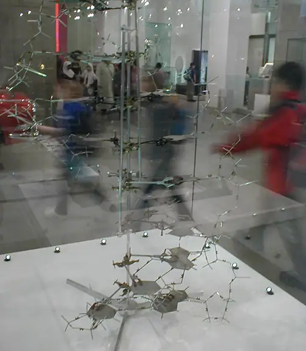
Check Your Understanding
- Which scientists are given most of the credit for describing the molecular structure of DNA?
DNA Structure¶
Watson and Crick proposed that DNA is made up of two strands that are twisted around each other to form a right-handed helix. The two DNA strands are antiparallel, such that the 3ʹ end of one strand faces the 5ʹ end of the other (Figure 10.16). The 3ʹ end of each strand has a free hydroxyl group, while the 5ʹ end of each strand has a free phosphate group. The sugar and phosphate of the polymerized nucleotides form the backbone of the structure, whereas the nitrogenous bases are stacked inside. These nitrogenous bases on the interior of the molecule interact with each other, base pairing.
Analysis of the diffraction patterns of DNA has determined that there are approximately 10 bases per turn in DNA. The asymmetrical spacing of the sugar-phosphate backbones generates major grooves (where the backbone is far apart) and minor grooves (where the backbone is close together) (Figure 10.16). These grooves are locations where proteins can bind to DNA. The binding of these proteins can alter the structure of DNA, regulate replication, or regulate transcription of DNA into RNA.
![a) A diagram of DNA shown as a double helix (a twisted ladder). The outside of the ladder is a blue ribbon labeled “sugar phosphate backbone”. The rungs of the ladder are labeled “base pair” and are either red and yellow or green and blue. Red indicates the nitrogenous base adenine. Yellow indicates the nitrogenous base thymine. Blue indicates the nitrogenous base guanine. Green indicates the nitrogenous base cytosine. The ladder twists so that there are wide spaces (called major grooves) and narrow spaces (called minor grooves) between the twists. B) A different diagram of DNA showing it as a straight ladder. This makes it easier to see the bases (which can now be labeled with the letters A, T, C or G directly on the image. The left strand has a 3-prime at the top and a 5-prime at the bottom. The right strand has a 5-prime at the top and a 3-prime at the bottom. C) Another diagram of DNA showing a much shorter segment which allows the chemical structures to be seen more clearly. The strands show that the phosphate group is always between carbon 3 of one nucleotide and carbon 5 of the next. The two strands are connected with dotted lines indicating hydrogen bonds. The A-T bond has 2 hydrogen bonds and C-G has 3 hydrogen bonds. The negative charge of the phosphates is also apparent.](img/osc-microbio-10-02-doubhelix.webp)
Base pairing takes place between a purine and pyrimidine. In DNA, adenine (A) and thymine (T) are complementary base pairs, and cytosine (C) and guanine (G) are also complementary base pairs, explaining Chargaff’s rules (Figure 10.17). The base pairs are stabilized by hydrogen bonds; adenine and thymine form two hydrogen bonds between them, whereas cytosine and guanine form three hydrogen bonds between them.
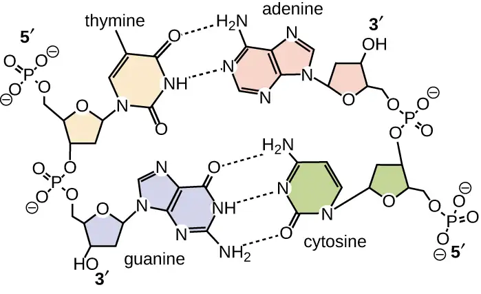
In the laboratory, exposing the two DNA strands of the double helix to high temperatures or to certain chemicals can break the hydrogen bonds between complementary bases, thus separating the strands into two separate single strands of DNA (single-stranded DNA [ssDNA]). This process is called DNA denaturation and is analogous to protein denaturation, as described in Proteins. The ssDNA strands can also be put back together as double-stranded DNA (dsDNA), through reannealing or renaturing by cooling or removing the chemical denaturants, allowing these hydrogen bonds to reform. The ability to artificially manipulate DNA in this way is the basis for several important techniques in biotechnology (Figure 10.18). Because of the additional hydrogen bonding between the C = G base pair, DNA with a high GC content is more difficult to denature than DNA with a lower GC content.
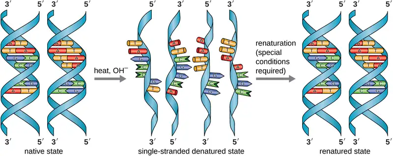
Link to Learning
View an animation on DNA structure from the DNA Learning Center to learn more.
Check Your Understanding
- What are the two complementary base pairs of DNA and how are they bonded together?
DNA Function¶
DNA stores the information needed to build and control the cell. The transmission of this information from mother to daughter cells is called vertical gene transfer and it occurs through the process of DNA replication. DNA is replicated when a cell makes a duplicate copy of its DNA, then the cell divides, resulting in the correct distribution of one DNA copy to each resulting cell. DNA can also be enzymatically degraded and used as a source of nucleosides and nucleotides for the cell. Unlike other macromolecules, DNA does not serve a structural role in cells.
Check Your Understanding
- How does DNA transmit genetic information to offspring?
Eye on Ethics: Paving the Way for Women in Science and Health Professions
Historically, women have been underrepresented in the sciences and in medicine, and often their pioneering contributions have gone relatively unnoticed. For example, although Rosalind Franklin performed the X-ray diffraction studies demonstrating the double helical structure of DNA, it is Watson and Crick who became famous for this discovery, building on her data. There still remains great controversy over whether their acquisition of her data was appropriate and whether personality conflicts and gender bias contributed to the delayed recognition of her significant contributions. Similarly, Barbara McClintock did pioneering work in maize (corn) genetics from the 1930s through 1950s, discovering transposons (jumping genes), but she was not recognized until much later, receiving a Nobel Prize in Physiology or Medicine in 1983 (Figure 10.19).
Today, women still remain underrepresented in many fields of science and medicine. While more than half of the undergraduate degrees in science are awarded to women, only 46% of doctoral degrees in science are awarded to women. In academia, the number of women at each level of career advancement continues to decrease, with women holding less than one-third of the positions of Ph.D.-level scientists in tenure-track positions, and less than one-quarter of the full professorships at 4-year colleges and universities.11 Even in the health professions, like nearly all other fields, women are often underrepresented in many medical careers and earn significantly less than their male counterparts, as shown in a 2013 study published by the Journal of the American Medical Association.12
Why do such disparities continue to exist and how do we break these cycles? The situation is complex and likely results from the combination of various factors, including how society conditions the behaviors of girls from a young age and supports their interests, both professionally and personally. Some have suggested that women do not belong in the laboratory, including Nobel Prize winner Tim Hunt, whose 2015 public comments suggesting that women are too emotional for science13 were met with widespread condemnation.
Perhaps girls should be supported more from a young age in the areas of science and math (Figure 10.19). Science, technology, engineering, and mathematics (STEM) programs sponsored by the American Association of University Women (AAUW)14 and National Aeronautics and Space Administration (NASA)15 are excellent examples of programs that offer such support. Contributions by women in science should be made known more widely to the public, and marketing targeted to young girls should include more images of historically and professionally successful female scientists and medical professionals, encouraging all bright young minds, including girls and women, to pursue careers in science and medicine.
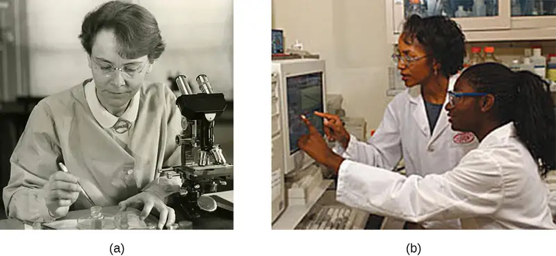
Clinical Focus: Part 2
Based upon his symptoms, Alex’s physician suspects that he is suffering from a foodborne illness that he acquired during his travels. Possibilities include bacterial infection (e.g., enterotoxigenic E. coli, Vibrio cholerae, Campylobacter jejuni, Salmonella), viral infection (rotavirus or norovirus), or protozoan infection (Giardia lamblia, Cryptosporidium parvum, or Entamoeba histolytica).
His physician orders a stool sample to identify possible causative agents (e.g., bacteria, cysts) and to look for the presence of blood because certain types of infectious agents (like C. jejuni, Salmonella, and E. histolytica) are associated with the production of bloody stools.
Alex’s stool sample showed neither blood nor cysts. Following analysis of his stool sample and based upon his recent travel history, the hospital physician suspected that Alex was suffering from traveler’s diarrhea caused by enterotoxigenic E. coli (ETEC), the causative agent of most traveler’s diarrhea. To verify the diagnosis and rule out other possibilities, Alex’s physician ordered a diagnostic lab test of his stool sample to look for DNA sequences encoding specific virulence factors of ETEC. The physician instructed Alex to drink lots of fluids to replace what he was losing and discharged him from the hospital.
ETEC produces several plasmid-encoded virulence factors that make it pathogenic compared with typical E. coli. These include the secreted toxins heat-labile enterotoxin (LT) and heat-stabile enterotoxin (ST), as well as colonization factor (CF). Both LT and ST cause the excretion of chloride ions from intestinal cells to the intestinal lumen, causing a consequent loss of water from intestinal cells, resulting in diarrhea. CF encodes a bacterial protein that aids in allowing the bacterium to adhere to the lining of the small intestine.
- Why did Alex’s physician use genetic analysis instead of either isolation of bacteria from the stool sample or direct Gram stain of the stool sample alone?
Jump to the next Clinical Focus box. Go back to the previous Clinical Focus box.
10.3 Structure and Function of RNA¶
Learning Objectives
By the end of this section, you will be able to:
- Describe the biochemical structure of ribonucleotides
- Describe the similarities and differences between RNA and DNA
- Describe the functions of the three main types of RNA used in protein synthesis
- Explain how RNA can serve as hereditary information
Structurally speaking, ribonucleic acid (RNA), is quite similar to DNA. However, whereas DNA molecules are typically long and double stranded, RNA molecules are much shorter and are typically single stranded. RNA molecules perform a variety of roles in the cell but are mainly involved in the process of protein synthesis (translation) and its regulation.
RNA Structure¶
RNA is typically single stranded and is made of ribonucleotides that are linked by phosphodiester bonds. A ribonucleotide in the RNA chain contains ribose (the pentose sugar), one of the four nitrogenous bases (A, U, G, and C), and a phosphate group. The subtle structural difference between the sugars gives DNA added stability, making DNA more suitable for storage of genetic information, whereas the relative instability of RNA makes it more suitable for its more short-term functions. The RNA-specific pyrimidine uracil forms a complementary base pair with adenine and is used instead of the thymine used in DNA. Even though RNA is single stranded, most types of RNA molecules show extensive intramolecular base pairing between complementary sequences within the RNA strand, creating a predictable three-dimensional structure essential for their function (Figure 10.20 and Figure 10.21).
![a) diagrams of ribose (in RNA) and deoxyribose (in DNA). Both have a pentagon shape with Oxygen at the top point of the pentagon. Both have an OH at carbon 1 and 3 and a CH2OH at carbon 4 (this last carbon is carbon 5). The difference is that ribose has an OH at carbon 2 and deoxyribose has an H at carbon 2. B) diagrams of thymine (T in DNA) and Uracil (U in RNA). Both have a single hexagon ring containing carbons and nitrogens. Both have a double bound O at the top carbon, and the bottom left carbon. The difference is that the top right carbon has an H in uracil and a CH3 in thymine.](img/osc-microbio-10-03-rnastruct.webp)
![a) A diagram of DNA and RNA. DNA has the double helix shape with the helix of sugar-phosphates on the outside and the base pairs on the inside. RNA has a single helix of sugar-phosphates with nitrogenous bases along the length of the helix. B) A diagram showing RNA folding upon itself. The bases attached to the sugar-phosphate backbone can form hydrogen bonds if there are stretches of complimentary bases at some distance from each other on the long strand. Other regions do not have these hydrogen bonds.](img/osc-microbio-10-03-rnastruct2.webp)
Check Your Understanding
- How does the structure of RNA differ from the structure of DNA?
Functions of RNA in Protein Synthesis¶
Cells access the information stored in DNA by creating RNA to direct the synthesis of proteins through the process of translation. Proteins within a cell have many functions, including building cellular structures and serving as enzyme catalysts for cellular chemical reactions that give cells their specific characteristics. The three main types of RNA directly involved in protein synthesis are messenger RNA (mRNA), ribosomal RNA (rRNA), and transfer RNA (tRNA).
In 1961, French scientists François Jacob and Jacques Monod hypothesized the existence of an intermediary between DNA and its protein products, which they called messenger RNA.16 Evidence supporting their hypothesis was gathered soon afterwards showing that information from DNA is transmitted to the ribosome for protein synthesis using mRNA. If DNA serves as the complete library of cellular information, mRNA serves as a photocopy of specific information needed at a particular point in time that serves as the instructions to make a protein.
The mRNA carries the message from the DNA, which controls all of the cellular activities in a cell. If a cell requires a certain protein to be synthesized, the gene for this product is “turned on” and the mRNA is synthesized through the process of transcription (see RNA Transcription). The mRNA then interacts with ribosomes and other cellular machinery (Figure 10.22) to direct the synthesis of the protein it encodes during the process of translation (see Protein Synthesis). mRNA is relatively unstable and short-lived in the cell, especially in prokaryotic cells, ensuring that proteins are only made when needed.
![A diagram showing mRNA as a long strand with sets of 3 letters grouped; the left of the mRNA is labeled 3-prime, the right is labeled 5-prime. An oval labeled ribosome small subunit sits under the mRNA and spans 3 of the 3-letter groups. A larger dome (labeled ribosome large subunit) sits on top of the mRNA at this same region. The large subunit has 3 gaps where rectangles labeled tRNA sit. These rectangles each sit on a group of 3-letters on the mRNA at one end and contain an amino acid on the other end. The tRNA on the left has a single amino acid. The tRNA in the middle has a growing pepetide chain of many amino acids. The tRNA on the right as no amino acids and is leaving the ribosome.](img/osc-microbio-10-03-rnafunct.webp)
rRNA and tRNA are stable types of RNA. In prokaryotes and eukaryotes, tRNA and rRNA are encoded in the DNA, then copied into long RNA molecules that are cut to release smaller fragments containing the individual mature RNA species. In eukaryotes, synthesis, cutting, and assembly of rRNA into ribosomes takes place in the nucleolus region of the nucleus, but these activities occur in the cytoplasm of prokaryotes. Neither of these types of RNA carries instructions to direct the synthesis of a polypeptide, but they play other important roles in protein synthesis.
Ribosomes are composed of rRNA and protein. As its name suggests, rRNA is a major constituent of ribosomes, composing up to about 60% of the ribosome by mass and providing the location where the mRNA binds. The rRNA ensures the proper alignment of the mRNA, tRNA, and the ribosomes; the rRNA of the ribosome also has an enzymatic activity (peptidyl transferase) and catalyzes the formation of the peptide bonds between two aligned amino acids during protein synthesis. Although rRNA had long been thought to serve primarily a structural role, its catalytic role within the ribosome was proven in 2000.17 Scientists in the laboratories of Thomas Steitz (1940–) and Peter Moore (1939–) at Yale University were able to crystallize the ribosome structure from Haloarcula marismortui, a halophilic archaeon isolated from the Dead Sea. Because of the importance of this work, Steitz shared the 2009 Nobel Prize in Chemistry with other scientists who made significant contributions to the understanding of ribosome structure.
Transfer RNA is the third main type of RNA and one of the smallest, usually only 70–90 nucleotides long. It carries the correct amino acid to the site of protein synthesis in the ribosome. It is the base pairing between the tRNA and mRNA that allows for the correct amino acid to be inserted in the polypeptide chain being synthesized (Figure 10.23). Any mutations in the tRNA or rRNA can result in global problems for the cell because both are necessary for proper protein synthesis (Table 10.1).
![A diagram of the 2-dimentional tRNA which is a single long strand of RNA folded into a plus shape with loops on the sides and bottom. The regions where the tRNA is folded so that there are 2 parts of the strand forming the linear portions of the plus are held together by hydrogen bonds labeled intramolecular pairing. The loop at the bottom has a set of 3 letters that are complimentary to 3 letters on the mRNA. The top part of the plus has a single stranded end at the 3-prime end; this is attached to an amino acid. B) The 3-dimentional structure looks like single strand folded into a double stranded structure with a bend in the middle.](img/osc-microbio-10-03-trna.webp)
Table 10.1
| Structure and Function of RNA | |||
|---|---|---|---|
| mRNA | rRNA | tRNA | |
| Structure | Short, unstable, single-stranded RNA corresponding to a gene encoded within DNA | Longer, stable RNA molecules composing 60% of ribosome’s mass | Short (70-90 nucleotides), stable RNA with extensive intramolecular base pairing; contains an amino acid binding site and an mRNA binding site |
| Function | Serves as intermediary between DNA and protein; used by ribosome to direct synthesis of protein it encodes | Ensures the proper alignment of mRNA, tRNA, and ribosome during protein synthesis; catalyzes peptide bond formation between amino acids | Carries the correct amino acid to the site of protein synthesis in the ribosome |
Check Your Understanding
- What are the functions of the three major types of RNA molecules involved in protein synthesis?
RNA as Hereditary Information¶
Although RNA does not serve as the hereditary information in most cells, RNA does hold this function for many viruses that do not contain DNA. Thus, RNA clearly does have the additional capacity to serve as genetic information. Although RNA is typically single stranded within cells, there is significant diversity in viruses. Rhinoviruses, which cause the common cold; influenza viruses; and the Ebola virus are single-stranded RNA viruses. Rotaviruses, which cause severe gastroenteritis in children and other immunocompromised individuals, are examples of double-stranded RNA viruses. Because double-stranded RNA is uncommon in eukaryotic cells, its presence serves as an indicator of viral infection. The implications for a virus having an RNA genome instead of a DNA genome are discussed in more detail in Viruses.
10.4 Structure and Function of Cellular Genomes¶
Learning Objectives
By the end of this section, you will be able to:
- Define gene and genotype and differentiate genotype from phenotype
- Describe chromosome structure and packaging
- Compare prokaryotic and eukaryotic chromosomes
- Explain why extrachromosomal DNA is important in a cell
Thus far, we have discussed the structure and function of individual pieces of DNA and RNA. In this section, we will discuss how all of an organism’s genetic material—collectively referred to as its genome—is organized inside of the cell. Since an organism’s genetics to a large extent dictate its characteristics, it should not be surprising that organisms differ in the arrangement of their DNA and RNA.
Genotype versus Phenotype¶
All cellular activities are encoded within a cell’s DNA. The sequence of bases within a DNA molecule represents the genetic information of the cell. Segments of DNA molecules are called genes, and individual genes contain the instructional code necessary for synthesizing various proteins, enzymes, or stable RNA molecules.
The full collection of genes that a cell contains within its genome is called its genotype. However, a cell does not express all of its genes simultaneously. Instead, it turns on (expresses) or turns off certain genes when necessary. The set of genes being expressed at any given point in time determines the cell’s activities and its observable characteristics, referred to as its phenotype. Genes that are always expressed are known as constitutive genes; some constitutive genes are known as housekeeping genes because they are necessary for the basic functions of the cell.
While the genotype of a cell remains constant, the phenotype may change in response to environmental signals (e.g., changes in temperature or nutrient availability) that affect which nonconstitutive genes are expressed. For example, the oral bacterium Streptococcus mutans produces a sticky slime layer that allows it to adhere to teeth, forming dental plaque; however, the genes that control the production of the slime layer are only expressed in the presence of sucrose (table sugar). Thus, while the genotype of S. mutans is constant, its phenotype changes depending on the presence and absence of sugar in its environment. Temperature can also regulate gene expression. For example, the gram-negative bacterium Serratia marcescens, a pathogen frequently associated with hospital-acquired infections, produces a red pigment at 28 °C but not at 37 °C, the normal internal temperature of the human body (Figure 10.24).
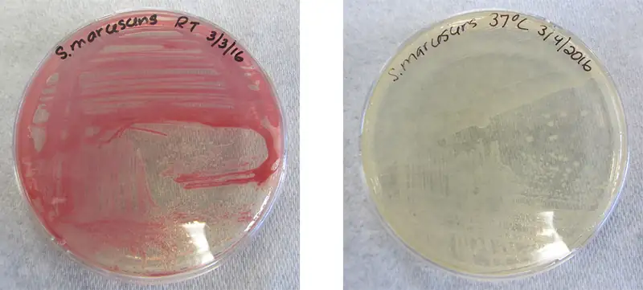
Organization of Genetic Material¶
The vast majority of an organism’s genome is organized into the cell’s chromosomes, which are discrete DNA structures within cells that control cellular activity. Recall that while eukaryotic chromosomes are housed in the membrane-bound nucleus, most prokaryotes contain a single, circular chromosome that is found in an area of the cytoplasm called the nucleoid (see Unique Characteristics of Prokaryotic Cells). A chromosome may contain several thousand genes.
Organization of Eukaryotic Chromosome¶
Chromosome structure differs somewhat between eukaryotic and prokaryotic cells. Eukaryotic chromosomes are typically linear, and eukaryotic cells contain multiple distinct chromosomes. Many eukaryotic cells contain two copies of each chromosome and, therefore, are diploid.
The length of a chromosome greatly exceeds the length of the cell, so a chromosome needs to be packaged into a very small space to fit within the cell. For example, the combined length of all of the 3 billion base pairs18 of DNA of the human genome would measure approximately 2 meters if completely stretched out, and some eukaryotic genomes are many times larger than the human genome. DNA supercoiling refers to the process by which DNA is twisted to fit inside the cell. Supercoiling may result in DNA that is either underwound (less than one turn of the helix per 10 base pairs) or overwound (more than one turn per 10 base pairs) from its normal relaxed state. Proteins known to be involved in supercoiling include topoisomerases; these enzymes help maintain the structure of supercoiled chromosomes, preventing overwinding of DNA during certain cellular processes like DNA replication.
During DNA packaging, DNA-binding proteins called histones perform various levels of DNA wrapping and attachment to scaffolding proteins. The combination of DNA with these attached proteins is referred to as chromatin. In eukaryotes, the packaging of DNA by histones may be influenced by environmental factors that affect the presence of methyl groups on certain cytosine nucleotides of DNA. The influence of environmental factors on DNA packaging is called epigenetics. Epigenetics is another mechanism for regulating gene expression without altering the sequence of nucleotides. Epigenetic changes can be maintained through multiple rounds of cell division and, therefore, can be heritable.
Link to Learning
View this animation from the DNA Learning Center to learn more about on DNA packaging in eukaryotes.
Organization of Prokaryotic Chromosomes¶
Chromosomes in bacteria and archaea are usually circular, and a prokaryotic cell typically contains only a single chromosome within the nucleoid. Because the chromosome contains only one copy of each gene, prokaryotes are haploid. As in eukaryotic cells, DNA supercoiling is necessary for the genome to fit within the prokaryotic cell. The DNA in the bacterial chromosome is arranged in several supercoiled domains. As with eukaryotes, topoisomerases are involved in supercoiling DNA. DNA gyrase is a type of topoisomerase, found in bacteria and some archaea, that helps prevent the overwinding of DNA. (Some antibiotics kill bacteria by targeting DNA gyrase.) In addition, histone-like proteins bind DNA and aid in DNA packaging. Other proteins bind to the origin of replication, the location in the chromosome where DNA replication initiates. Because different regions of DNA are packaged differently, some regions of chromosomal DNA are more accessible to enzymes and thus may be used more readily as templates for gene expression. Interestingly, several bacteria, including Helicobacter pylori and Shigella flexneri, have been shown to induce epigenetic changes in their hosts upon infection, leading to chromatin remodeling that may cause long-term effects on host immunity.19
Check Your Understanding
- What is the difference between a cell’s genotype and its phenotype?
- How does DNA fit inside cells?
Noncoding DNA¶
In addition to genes, a genome also contains many regions of noncoding DNA that do not encode proteins or stable RNA products. Noncoding DNA is commonly found in areas prior to the start of coding sequences of genes as well as in intergenic regions (i.e., DNA sequences located between genes) (Figure 10.25).
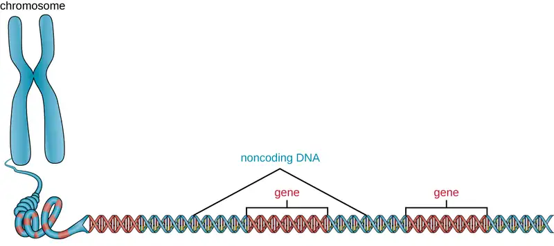
Prokaryotes appear to use their genomes very efficiently, with only an average of 12% of the genome being taken up by noncoding sequences. In contrast, noncoding DNA can represent about 98% of the genome in eukaryotes, as seen in humans, but the percentage of noncoding DNA varies between species.20 These noncoding DNA regions were once referred to as “junk DNA”; however, this terminology is no longer widely accepted because scientists have since found roles for some of these regions, many of which contribute to the regulation of transcription or translation through the production of small noncoding RNA molecules, DNA packaging, and chromosomal stability. Although scientists may not fully understand the roles of all noncoding regions of DNA, it is generally believed that they do have purposes within the cell.
Check Your Understanding
- What is the role of noncoding DNA?
Extrachromosomal DNA¶
Although most DNA is contained within a cell’s chromosomes, many cells have additional molecules of DNA outside the chromosomes, called extrachromosomal DNA, that are also part of its genome. The genomes of eukaryotic cells would also include the chromosomes from any organelles such as mitochondria and/or chloroplasts that these cells maintain (Figure 10.26). The maintenance of circular chromosomes in these organelles is a vestige of their prokaryotic origins and supports the endosymbiotic theory (see Foundations of Modern Cell Theory). In some cases, genomes of certain DNA viruses can also be maintained independently in host cells during latent viral infection. In these cases, these viruses are another form of extrachromosomal DNA. For example, the human papillomavirus (HPV) may be maintained in infected cells in this way.
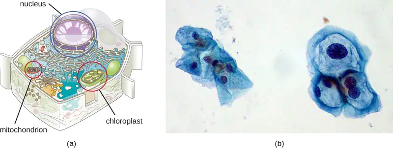
Besides chromosomes, some prokaryotes also have smaller loops of DNA called plasmids that may contain one or a few genes not essential for normal growth (Figure 3.12). Bacteria can exchange these plasmids with other bacteria in a process known as horizontal gene transfer (HGT). The exchange of genetic material on plasmids sometimes provides microbes with new genes beneficial for growth and survival under special conditions. In some cases, genes obtained from plasmids may have clinical implications, encoding virulence factors that give a microbe the ability to cause disease or make a microbe resistant to certain antibiotics. Plasmids are also used heavily in genetic engineering and biotechnology as a way to move genes from one cell to another. The role of plasmids in horizontal gene transfer and biotechnology will be discussed further in Mechanisms of Microbial Genetics and Modern Applications of Microbial Genetics.
Check Your Understanding
- How are plasmids involved in antibiotic resistance?
Case in Point: Lethal Plasmids
Maria, a 20-year-old anthropology student from Texas, recently became ill in the African nation of Botswana, where she was conducting research as part of a study-abroad program. Maria’s research was focused on traditional African methods of tanning hides for the production of leather. Over a period of three weeks, she visited a tannery daily for several hours to observe and participate in the tanning process. One day, after returning from the tannery, Maria developed a fever, chills, and a headache, along with chest pain, muscle aches, nausea, and other flu-like symptoms. Initially, she was not concerned, but when her fever spiked and she began to cough up blood, her African host family became alarmed and rushed her to the hospital, where her condition continued to worsen.
After learning about her recent work at the tannery, the physician suspected that Maria had been exposed to anthrax. He ordered a chest X-ray, a blood sample, and a spinal tap, and immediately started her on a course of intravenous penicillin. Unfortunately, lab tests confirmed the physician’s presumptive diagnosis. Maria’s chest X-ray exhibited pleural effusion, the accumulation of fluid in the space between the pleural membranes, and a Gram stain of her blood revealed the presence of gram-positive, rod-shaped bacteria in short chains, consistent with Bacillus anthracis. Blood and bacteria were also shown to be present in her cerebrospinal fluid, indicating that the infection had progressed to meningitis. Despite supportive treatment and aggressive antibiotic therapy, Maria slipped into an unresponsive state and died three days later.
Anthrax is a disease caused by the introduction of endospores from the gram-positive bacterium B. anthracis into the body. Once infected, patients typically develop meningitis, often with fatal results. In Maria’s case, she inhaled the endospores while handling the hides of animals that had been infected.
The genome of B. anthracis illustrates how small structural differences can lead to major differences in virulence. In 2003, the genomes of B. anthracis and Bacillus cereus, a similar but less pathogenic bacterium of the same genus, were sequenced and compared.21 Researchers discovered that the 16S rRNA gene sequences of these bacteria are more than 99% identical, meaning that they are actually members of the same species despite their traditional classification as separate species. Although their chromosomal sequences also revealed a great deal of similarity, several virulence factors of B. anthracis were found to be encoded on two large plasmids not found in B. cereus. The plasmid pX01 encodes a three-part toxin that suppresses the host immune system, whereas the plasmid pX02 encodes a capsular polysaccharide that further protects the bacterium from the host immune system (Figure 10.27). Since B. cereus lacks these plasmids, it does not produce these virulence factors, and although it is still pathogenic, it is typically associated with mild cases of diarrhea from which the body can quickly recover. Unfortunately for Maria, the presence of these toxin-encoding plasmids in B. anthracis gives it its lethal virulence.
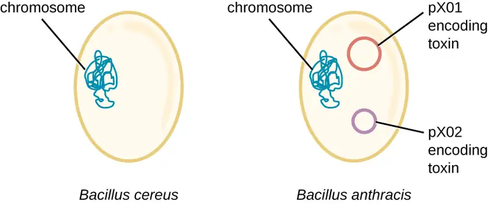
- What do you think would happen to the pathogenicity of B. anthracis if it lost one or both of its plasmids?
Clinical Focus: Resolution
Within 24 hours, the results of the diagnostic test analysis of Alex’s stool sample revealed that it was positive for heat-labile enterotoxin (LT), heat-stabile enterotoxin (ST), and colonization factor (CF), confirming the hospital physician’s suspicion of ETEC. During a follow-up with Alex’s family physician, this physician noted that Alex’s symptoms were not resolving quickly and he was experiencing discomfort that was preventing him from returning to classes. The family physician prescribed Alex a course of ciprofloxacin to resolve his symptoms. Fortunately, the ciprofloxacin resolved Alex’s symptoms within a few days.
Alex likely got his infection from ingesting contaminated food or water. Emerging industrialized countries like Mexico are still developing sanitation practices that prevent the contamination of water with fecal material. Travelers in such countries should avoid the ingestion of undercooked foods, especially meats, seafood, vegetables, and unpasteurized dairy products. They should also avoid use of water that has not been treated; this includes drinking water, ice cubes, and even water used for brushing teeth. Using bottled water for these purposes is a good alternative. Good hygiene (handwashing) can also aid the prevention of an ETEC infection. Alex had not been careful about his food or water consumption, which led to his illness.
Alex’s symptoms were very similar to those of cholera, caused by the gram-negative bacterium Vibrio cholerae, which also produces a toxin similar to ST and LT. At some point in the evolutionary history of ETEC, a nonpathogenic strain of E. coli similar to those typically found in the gut may have acquired the genes encoding the ST and LT toxins from V. cholerae. The fact that the genes encoding those toxins are encoded on extrachromosomal plasmids in ETEC supports the idea that these genes were acquired by E. coli and are likely maintained in bacterial populations through horizontal gene transfer.
Go back to the previous Clinical Focus box.
Viral Genomes¶
Viral genomes exhibit significant diversity in structure. Some viruses have genomes that consist of DNA as their genetic material. This DNA may be single stranded, as exemplified by human parvoviruses, or double stranded, as seen in the herpesviruses and poxviruses. Additionally, although all cellular life uses DNA as its genetic material, some viral genomes are made of either single-stranded or double-stranded RNA molecules, as we have discussed. Viral genomes are typically smaller than most bacterial genomes, encoding only a few genes, because they rely on their hosts to carry out many of the functions required for their replication. The diversity of viral genome structures and their implications for viral replication life cycles are discussed in more detail in The Viral Life Cycle.
Check Your Understanding
- Why do viral genomes vary widely among viruses?
Micro Connections: Genome Size Matters
There is great variation in size of genomes among different organisms. Most eukaryotes maintain multiple chromosomes; humans, for example have 23 pairs, giving them 46 chromosomes. Despite being large at 3 billion base pairs, the human genome is far from the largest genome. Plants often maintain very large genomes, up to 150 billion base pairs, and commonly are polyploid, having multiple copies of each chromosome.
The size of bacterial genomes also varies considerably, although they tend to be smaller than eukaryotic genomes (Figure 10.28). Some bacterial genomes may be as small as only 112,000 base pairs. Often, the size of a bacterium’s genome directly relates to how much the bacterium depends on its host for survival. When a bacterium relies on the host cell to carry out certain functions, it loses the genes encoding the abilities to carry out those functions itself. These types of bacterial endosymbionts are reminiscent of the prokaryotic origins of mitochondria and chloroplasts.
From a clinical perspective, obligate and facultative intracellular pathogens also tend to have small genomes (some around 1 million base pairs). Because host cells can supply most of their nutrients, they tend to have a reduced number of genes encoding metabolic functions, making their cultivation in the laboratory difficult if not impossible Due to their small sizes, the genomes of organisms like Mycoplasma genitalium (580,000 base pairs), Chlamydia trachomatis (1.0 million), Rickettsia prowazekii (1.1 million), and Treponema pallidum (1.1 million) were some of the earlier bacterial genomes sequenced. Respectively, these pathogens cause urethritis and pelvic inflammation, chlamydia, typhus, and syphilis.
Whereas obligate intracellular pathogens have unusually small genomes, other bacteria with a great variety of metabolic and enzymatic capabilities have unusually large bacterial genomes. Pseudomonas aeruginosa, for example, is a bacterium commonly found in the environment and is able to grow on a wide range of substrates. Its genome contains 6.3 million base pairs, giving it a high metabolic ability and the ability to produce virulence factors that cause several types of opportunistic infections.
Interestingly, there has been significant variability in genome size in viruses as well, ranging from 3,500 base pairs to 2.5 million base pairs, significantly exceeding the size of many bacterial genomes. The great variation observed in viral genome sizes further contributes to the great diversity of viral genome characteristics already discussed.
![A graph showing genome sizes. Viruses have genomes that range from 1.7x10 to the 2nd bp to 2.5x10 to the 6th bp. Bacteria have genomes that range in size from 10 to the 5th to 10 to the 7th. One example is E. coli which ranges from 4.6 to 5.6 x 10 to the 6th bp. Fungi have genomes that range from 10 to the 6th to 10 to the 8th bp. Saccharomyces cerevisiae (yeast) has a genome of 1.2 x 10 to the 7th bp. Plants and animals have genomes that range from 10 to the 6th to 10 to the 11th bp. Mammals range from 10 to the 9th to 10 to the 10th bp. Humans have a genome of 3 x 10 to the 9th.](img/osc-microbio-10-04-genomesize.webp)
Link to Learning
Visit the genome database of the National Center for Biotechnology Information (NCBI) to see the genomes that have been sequenced and their sizes.
Chapter Review¶
Key Concepts and Summary¶
10.1 Using Microbiology to Discover the Secrets of Life¶
- DNA was discovered and characterized long before its role in heredity was understood. Microbiologists played significant roles in demonstrating that DNA is the hereditary information found within cells.
- In the 1850s and 1860s, Gregor Mendel experimented with true-breeding garden peas to demonstrate the heritability of specific observable traits.
- In 1869, Friedrich Miescher isolated and purified a compound rich in phosphorus from the nuclei of white blood cells; he named the compound nuclein. Miescher’s student Richard Altmann discovered its acidic nature, renaming it nucleic acid. Albrecht Kossell characterized the nucleotide bases found within nucleic acids.
- Although Walter Sutton and Theodor Boveri proposed the Chromosomal Theory of Inheritance in 1902, it was not scientifically demonstrated until the 1915 publication of the work of Thomas Hunt Morgan and his colleagues.
- Using Acetabularia, a large algal cell, as his model system, Joachim Hämmerling demonstrated in the 1930s and 1940s that the nucleus was the location of hereditary information in these cells.
- In the 1940s, George Beadle and Edward Tatum used the mold Neurospora crassa to show that each protein’s production was under the control of a single gene, demonstrating the “one gene–one enzyme” hypothesis.
- In 1928, Frederick Griffith showed that dead encapsulated bacteria could pass genetic information to live nonencapsulated bacteria and transform them into harmful strains. In 1944, Oswald Avery, Colin McLeod, and Maclyn McCarty identified the compound as DNA.
- The nature of DNA as the molecule that stores genetic information was unequivocally demonstrated in the experiment of Alfred Hershey and Martha Chase published in 1952. Labeled DNA from bacterial viruses entered and infected bacterial cells, giving rise to more viral particles. The labeled protein coats did not participate in the transmission of genetic information.
10.2 Structure and Function of DNA¶
- Nucleic acids are composed of nucleotides, each of which contains a pentose sugar, a phosphate group, and a nitrogenous base. Deoxyribonucleotides within DNA contain deoxyribose as the pentose sugar.
- DNA contains the pyrimidines cytosine and thymine, and the purinesadenine and guanine.
- Nucleotides are linked together by phosphodiester bonds between the 5ʹ phosphate group of one nucleotide and the 3ʹ hydroxyl group of another. A nucleic acid strand has a free phosphate group at the 5ʹ end and a free hydroxyl group at the 3ʹ end.
- Chargaff discovered that the amount of adenine is approximately equal to the amount of thymine in DNA, and that the amount of the guanine is approximately equal to cytosine. These relationships were later determined to be due to complementary base pairing.
- Watson and Crick, building on the work of Chargaff, Franklin and Gosling, and Wilkins, proposed the double helix model and base pairing for DNA structure.
- DNA is composed of two complementary strands oriented antiparallel to each other with the phosphodiester backbones on the exterior of the molecule. The nitrogenous bases of each strand face each other and complementary bases hydrogen bond to each other, stabilizing the double helix.
- Heat or chemicals can break the hydrogen bonds between complementary bases, denaturing DNA. Cooling or removing chemicals can lead to renaturation or reannealing of DNA by allowing hydrogen bonds to reform between complementary bases.
- DNA stores the instructions needed to build and control the cell. This information is transmitted from parent to offspring through vertical gene transfer.
10.3 Structure and Function of RNA¶
- Ribonucleic acid (RNA) is typically single stranded and contains ribose as its pentose sugar and the pyrimidine uracil instead of thymine. An RNA strand can undergo significant intramolecular base pairing to take on a three-dimensional structure.
- There are three main types of RNA, all involved in protein synthesis.
- Messenger RNA (mRNA) serves as the intermediary between DNA and the synthesis of protein products during translation.
- Ribosomal RNA (rRNA) is a type of stable RNA that is a major constituent of ribosomes. It ensures the proper alignment of the mRNA and the ribosomes during protein synthesis and catalyzes the formation of the peptide bonds between two aligned amino acids during protein synthesis.
- Transfer RNA (tRNA) is a small type of stable RNA that carries an amino acid to the corresponding site of protein synthesis in the ribosome. It is the base pairing between the tRNA and mRNA that allows for the correct amino acid to be inserted in the polypeptide chain being synthesized.
- Although RNA is not used for long-term genetic information in cells, many viruses do use RNA as their genetic material.
10.4 Structure and Function of Cellular Genomes¶
- The entire genetic content of a cell is its genome.
- Genes code for proteins, or stable RNA molecules, each of which carries out a specific function in the cell.
- Although the genotype that a cell possesses remains constant, expression of genes is dependent on environmental conditions.
- A phenotype is the observable characteristics of a cell (or organism) at a given point in time and results from the complement of genes currently being used.
- The majority of genetic material is organized into chromosomes that contain the DNA that controls cellular activities.
- Prokaryotes are typically haploid, usually having a single circular chromosome found in the nucleoid. Eukaryotes are diploid; DNA is organized into multiple linear chromosomes found in the nucleus.
- Supercoiling and DNA packaging using DNA binding proteins allows lengthy molecules to fit inside a cell. Eukaryotes and archaea use histone proteins, and bacteria use different proteins with similar function.
- Prokaryotic and eukaryotic genomes both contain noncoding DNA, the function of which is not well understood. Some noncoding DNA appears to participate in the formation of small noncoding RNA molecules that influence gene expression; some appears to play a role in maintaining chromosomal structure and in DNA packaging.
- Extrachromosomal DNA in eukaryotes includes the chromosomes found within organelles of prokaryotic origin (mitochondria and chloroplasts) that evolved by endosymbiosis. Some viruses may also maintain themselves extrachromosomally.
- Extrachromosomal DNA in prokaryotes is commonly maintained as plasmids that encode a few nonessential genes that may be helpful under specific conditions. Plasmids can be spread through a bacterial community by horizontal gene transfer.
- Viral genomes show extensive variation and may be composed of either RNA or DNA, and may be either double or single stranded.
Multiple Choice¶
10.1 Using Microbiology to Discover the Secrets of Life¶
1. Frederick Griffith infected mice with a combination of dead R and live S bacterial strains. What was the outcome, and why did it occur?
- The mice will live. Transformation was not required.
- The mice will die. Transformation of genetic material from R to S was required.
- The mice will live. Transformation of genetic material from S to R was required.
- The mice will die. Transformation was not required.
Answer
D
2. Why was the alga Acetabularia a good model organism for Joachim Hämmerling to use to identify the location of genetic material?
- It lacks a nuclear membrane.
- It self-fertilizes.
- It is a large, asymmetrical, single cell easy to see with the naked eye.
- It makes a protein capsid.
Answer
C
3. Which of the following best describes the results from Hershey and Chase’s experiment using bacterial viruses with 35S-labeled proteins or 32P-labeled DNA that are consistent with protein being the molecule responsible for hereditary?
- After infection with the 35S-labeled viruses and centrifugation, only the pellet would be radioactive.
- After infection with the 35S-labeled viruses and centrifugation, both the pellet and the supernatant would be radioactive.
- After infection with the 32P-labeled viruses and centrifugation, only the pellet would be radioactive.
- After infection with the 32P-labeled viruses and centrifugation, both the pellet and the supernatant would be radioactive.
Answer
A
4. Which method did Morgan and colleagues use to show that hereditary information was carried on chromosomes?
- statistical predictions of the outcomes of crosses using true-breeding parents
- correlations between microscopic observations of chromosomal movement and the characteristics of offspring
- transformation of nonpathogenic bacteria to pathogenic bacteria
- mutations resulting in distinct defects in metabolic enzymatic pathways
Answer
B
5. According to Beadle and Tatum’s “one gene–one enzyme” hypothesis, which of the following enzymes will eliminate the transformation of hereditary material from pathogenic bacteria to nonpathogenic bacteria?
- carbohydrate-degrading enzymes
- proteinases
- ribonucleases
- deoxyribonucleases
Answer
D
10.2 Structure and Function of DNA¶
6. Which of the following is not found within DNA?
- thymine
- phosphodiester bonds
- complementary base pairing
- amino acids
Answer
D
7. If 30% of the bases within a DNA molecule are adenine, what is the percentage of thymine?
- 20%
- 25%
- 30%
- 35%
Answer
C
8. Which of the following statements about base pairing in DNA is incorrect?
- Purines always base pairs with pyrimidines.
- Adenine binds to guanine.
- Base pairs are stabilized by hydrogen bonds.
- Base pairing occurs at the interior of the double helix.
Answer
B
9. If a DNA strand contains the sequence 5ʹ-ATTCCGGATCGA-3ʹ, which of the following is the sequence of the complementary strand of DNA?
- 5ʹ-TAAGGCCTAGCT-3ʹ
- 5ʹ-ATTCCGGATCGA-3ʹ
- 3ʹ-TAACCGGTACGT-5ʹ
- 5ʹ-TCGATCCGGAAT-3ʹ
Answer
D
10. During denaturation of DNA, which of the following happens?
- Hydrogen bonds between complementary bases break.
- Phosphodiester bonds break within the sugar-phosphate backbone.
- Hydrogen bonds within the sugar-phosphate backbone break.
- Phosphodiester bonds between complementary bases break.
Answer
A.
10.3 Structure and Function of RNA¶
11. Which of the following types of RNA codes for a protein?
- dsRNA
- mRNA
- rRNA
- tRNA
Answer
B
12. A nucleic acid is purified from a mixture. The molecules are relatively small, contain uracil, and most are covalently bound to an amino acid. Which of the following was purified?
- DNA
- mRNA
- rRNA
- tRNA
Answer
D
13. Which of the following types of RNA is known for its catalytic abilities?
- dsRNA
- mRNA
- rRNA
- tRNA
Answer
C
14. Ribosomes are composed of rRNA and what other component?
- protein
- carbohydrates
- DNA
- mRNA
Answer
A
15. Which of the following may use RNA as its genome?
- a bacterium
- an archaeon
- a virus
- a eukaryote
Answer
C
10.4 Structure and Function of Cellular Genomes¶
16. Which of the following correctly describes the structure of the typical eukaryotic genome?
- diploid
- linear
- singular
- double stranded
Answer
A
17. Which of the following is typically found as part of the prokaryotic genome?
- chloroplast DNA
- linear chromosomes
- plasmids
- mitochondrial DNA
Answer
C
18. Serratia marcescens cells produce a red pigment at room temperature. The red color of the colonies is an example of which of the following?
- genotype
- phenotype
- change in DNA base composition
- adaptation to the environment
Answer
B
19. Which of the following genes would not likely be encoded on a plasmid?
- genes encoding toxins that damage host tissue
- genes encoding antibacterial resistance
- gene encoding enzymes for glycolysis
- genes encoding enzymes for the degradation of an unusual substrate
Answer
C
20. Histones are DNA binding proteins that are important for DNA packaging in which of the following?
- double-stranded and single-stranded DNA viruses
- archaea and bacteria
- bacteria and eukaryotes
- eukaryotes and archaea
Answer
D
Fill in the Blank¶
10.1 Using Microbiology to Discover the Secrets of Life¶
21. The element ____________ is unique to nucleic acids compared with other macromolecules.
Answer
phosphorus
22. In the late 1800s and early 1900s, the macromolecule thought to be responsible for heredity was ______________.
Answer
protein
10.2 Structure and Function of DNA¶
23. The end of a nucleic acid strand with a free phosphate group is called the ________.
Answer
5ʹ end
10.4 Structure and Function of Cellular Genomes¶
24. Plasmids are typically transferred among members of a bacterial community by ________ gene transfer.
Answer
horizontal
Short Answer¶
10.1 Using Microbiology to Discover the Secrets of Life¶
25. Why do bacteria and viruses make good model systems for various genetic studies?
26. Why was nucleic acid disregarded for so long as the molecule responsible for the transmission of hereditary information?
27. Bacteriophages inject their genetic material into host cells, whereas animal viruses enter host cells completely. Why was it important to use a bacteriophage in the Hershey–Chase experiment rather than an animal virus?
10.2 Structure and Function of DNA¶
28. What is the role of phosphodiester bonds within the sugar-phosphate backbone of DNA?
29. What is meant by the term “antiparallel?”
30. Why is DNA with a high GC content more difficult to denature than that with a low GC content?
10.3 Structure and Function of RNA¶
31. What are the differences between DNA nucleotides and RNA nucleotides?
32. How is the information stored within the base sequence of DNA used to determine a cell’s properties?
33. How do complementary base pairs contribute to intramolecular base pairing within an RNA molecule?
34. If an antisense RNA has the sequence 5ʹAUUCGAAUGC3ʹ, what is the sequence of the mRNA to which it will bind? Be sure to label the 5ʹ and 3ʹ ends of the molecule you draw.
35. Why does double-stranded RNA (dsRNA) stimulate RNA interference?
10.4 Structure and Function of Cellular Genomes¶
36. What are some differences in chromosomal structures between prokaryotes and eukaryotes?
37. How do prokaryotes and eukaryotes manage to fit their lengthy DNA inside of cells? Why is this necessary?
38. What are some functions of noncoding DNA?
39. In the chromatin of eukaryotic cells, which regions of the chromosome would you expect to be more compact: the regions that contain genes being actively copied into RNA or those that contain inactive genes?
Critical Thinking¶
10.1 Using Microbiology to Discover the Secrets of Life¶
40. In the figure shown, if the nuclei were contained within the stalks of Acetabularia, what types of caps would you expect from the pictured grafts?
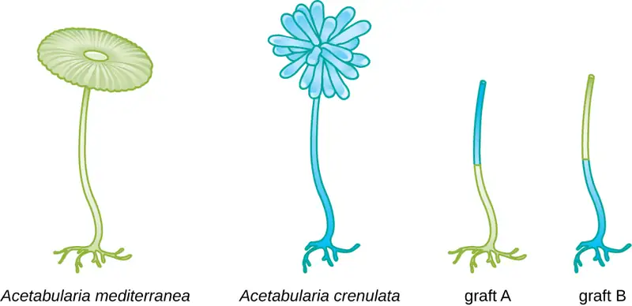
41. Why are Hershey and Chase credited with identifying DNA as the carrier of heredity even though DNA had been discovered many years before?
10.2 Structure and Function of DNA¶
42. A certain DNA sample is found to have a makeup consisting of 22% thymine. Use Chargaff’s rules to fill in the percentages for the other three nitrogenous bases.
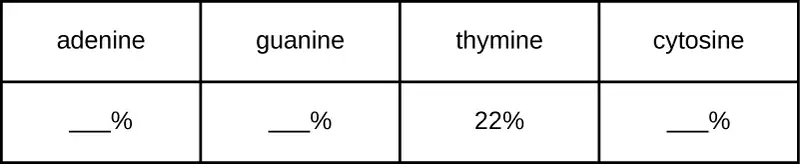
43. In considering the structure of the DNA double helix, how would you expect the structure to differ if there was base pairing between two purines? Between two pyrimidines?
10.3 Structure and Function of RNA¶
44. Identify the location of mRNA, rRNA, and tRNA in the figure.
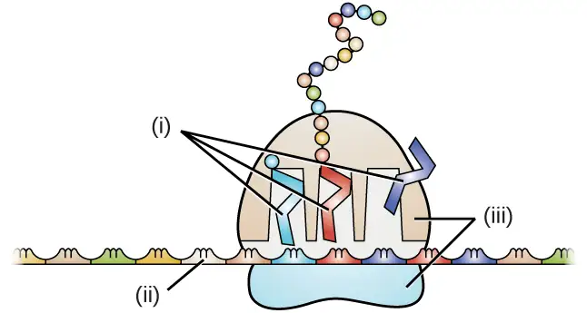
45. Why does it make sense that tRNA and rRNA molecules are more stable than mRNA molecules?
10.4 Structure and Function of Cellular Genomes¶
46. A new type of bacteriophage has been isolated and you are in charge of characterizing its genome. The base composition of the bacteriophage is A (15%), C (20%), T (35%), and G (30%). What can you conclude about the genome of the virus?
True/False¶
10.2 Structure and Function of DNA¶
47. The work of Rosalind Franklin and R.G. Gosling was important in demonstrating the helical nature of DNA.
Answer
True
48. The A-T base pair has more hydrogen bonding than the C-G base pair.
Answer
False
10.3 Structure and Function of RNA¶
49. Ribosomes are composed mostly of RNA.
Answer
True
50. Double-stranded RNA is commonly found inside cells.
Answer
False
10.4 Structure and Function of Cellular Genomes¶
51. Within an organism, phenotypes may change while genotypes remain constant.
Answer
True
52. Noncoding DNA has no biological purpose.
Answer
False
Matching¶
53. Match the correct molecule with its description:
| ___tRNA ___rRNA ___mRNA |
A. is a major component of ribosome B. is a copy of the information in a gene C. carries an amino acid to the ribosome |
Answer
C, A, B
Adapted from Microbiology by OpenStax, licensed under CC BY 4.0. Access the original for free at openstax.org. Changes: converted to the web reading format of The Open Book Project.
-
J.G. Mendel. “Versuche über Pflanzenhybriden.” Verhandlungen des naturforschenden Vereines in Brünn, Bd. Abhandlungen 4 (1865):3–7. (For English translation, see http://www.mendelweb.org/Mendel.plain.html) ↩
-
G.W. Beadle, E.L. Tatum. “Genetic Control of Biochemical Reactions in Neurospora.” Proceedings of the National Academy of Sciences 27 no. 11 (1941):499–506. ↩
-
F. Griffith. “The Significance of Pneumococcal Types.” Journal of Hygiene 27 no. 2 (1928):8–159. ↩
-
A.D. Hershey, M. Chase. “Independent Functions of Viral Protein and Nucleic Acid in Growth of Bacteriophage.” Journal of General Physiology 36 no. 1 (1952):39–56. ↩
-
N. Kresge et al. “Chargaff's Rules: The Work of Erwin Chargaff.” Journal of Biological Chemistry 280 (2005):e21. ↩
-
L. Pauling, “A Proposed Structure for the Nucleic Acids.” Proceedings of the National Academy of Science of the United States of America 39 no. 2 (1953):84–97. ↩
-
J.D. Watson, F.H.C. Crick. “A Structure for Deoxyribose Nucleic Acid.” Nature 171 no. 4356 (1953):737–738. ↩
-
M.H.F. Wilkins et al. “Molecular Structure of Deoxypentose Nucleic Acids.” Nature 171 no. 4356 (1953):738–740. ↩
-
R. Franklin, R.G. Gosling. “Molecular Configuration in Sodium Thymonucleate.” Nature 171 no. 4356 (1953):740–741. ↩
-
R.O. Day et al. “A Crystalline Fragment of the Double Helix: The Structure of the Dinucleoside Phosphate Guanylyl-3',5'-Cytidine.” Proceedings of the National Academy of Sciences of the United States of America 70 no. 3 (1973):849–853. ↩
-
N.H. Wolfinger “For Female Scientists, There's No Good Time to Have Children.” The Atlantic July 29, 2013. http://www.theatlantic.com/sexes/archive/2013/07/for-female-scientists-theres-no-good-time-to-have-children/278165/. ↩
-
S.A. Seabury et al. “Trends in the Earnings of Male and Female Health Care Professionals in the United States, 1987 to 2010.” Journal of the American Medical Association Internal Medicine 173 no. 18 (2013):1748–1750. ↩
-
E. Chung. “Tim Hunt, Sexism and Science: The Real 'Trouble With Girls' in Labs.” CBC News Technology and Science, June 12, 2015. http://www.cbc.ca/news/technology/tim-hunt-sexism-and-science-the-real-trouble-with-girls-in-labs-1.3110133. Accessed 8/4/2016. ↩
-
American Association of University Women. “Building a STEM Pipeline for Girls and Women.” http://www.aauw.org/what-we-do/stem-education/. Accessed June 10, 2016. ↩
-
National Aeronautics and Space Administration. “Outreach Programs: Women and Girls Initiative.” http://women.nasa.gov/outreach-programs/. Accessed June 10, 2016. ↩
-
A. Rich. “The Era of RNA Awakening: Structural Biology of RNA in the Early Years.” Quarterly Reviews of Biophysics 42 no. 2 (2009):117–137. ↩
-
P. Nissen et al. “The Structural Basis of Ribosome Activity in Peptide Bond Synthesis.” Science 289 no. 5481 (2000):920–930. ↩
-
National Human Genome Research Institute. “The Human Genome Project Completion: Frequently Asked Questions.” https://www.genome.gov/11006943. Accessed June 10, 2016 ↩
-
H. Bierne et al. “Epigenetics and Bacterial Infections.” Cold Spring Harbor Perspectives in Medicine 2 no. 12 (2012):a010272. ↩
-
R.J. Taft et al. “The Relationship between Non-Protein-Coding DNA and Eukaryotic Complexity.” Bioessays 29 no. 3 (2007):288–299. ↩
-
N. Ivanova et al. “Genome Sequence of Bacillus cereus and Comparative Analysis with Bacillus anthracis.” Nature 423 no. 6935 (2003):87–91. ↩